COLONIAL AGRICULTURE, INDUSTRY, AND COMMERCE
The Land and the Westward Movement
The Significance of Land Tenure. —The way in which land may be acquired, held, divided among heirs, and bought and sold exercises a deep influence on the life and culture of a people. The feudal and aristocratic societies of Europe were founded on a system of landlordism which was characterized by two distinct features. In the first place, the land was nearly all held in great estates, each owned by a single proprietor. In the second place, every estate was kept intact under the law of primogeniture, which at the death of a lord transferred all his landed property to his eldest son. This prevented the subdivision of estates and the growth of a large body of small farmers or freeholders owning their own land. It made a form of tenantry or servitude inevitable for the mass of those who labored on the land. It also enabled the landlords to maintain themselves in power as a governing class and kept the tenants and laborers subject to their economic and political control. If land tenure was so significant in Europe, it was equally important in the development of America, where practically all the first immigrants were forced by circumstances to derive their livelihood from the soil.
Experiments in Common Tillage. —In the New World, with its broad extent of land awaiting the white man's plow, it was impossible to introduce in its entirety and over the whole area the system of lords and
tenants that existed across the sea. So it happened that almost every kind of experiment in land tenure, from communism to feudalism, was tried. In the early days of the Jamestown colony, the land, though owned by the London Company, was tilled in common by the settlers. No man had a separate plot of his own. The motto of the community was: "Labor and share alike." All were supposed to work in the fields and receive an equal share of the produce. At Plymouth, the Pilgrims attempted a similar experiment, laying out the fields in common and distributing the joint produce of their labor with rough equality among the workers.
In both colonies the communistic experiments were failures. Angry at the lazy men in Jamestown who idled their time away and yet expected regular meals, Captain John Smith issued a manifesto: "Everyone that gathereth not every day as much as I do, the next day shall be set beyond the river and forever banished from the fort and live there or starve." Even this terrible threat did not bring a change in production. Not until each man was given a plot of his own to till, not until each gathered the fruits of his own labor, did the colony prosper. In Plymouth, where the communal experiment lasted for five years, the results were similar to those in Virginia, and the system was given up for one of separate fields in which every person could "set corn for his own particular." Some other New England towns, refusing to profit by the experience of their Plymouth neighbor, also made excursions into common ownership and labor, only to abandon the idea and go in for individual ownership of the land. "By degrees it was seen that even the Lord's people could not carry the complicated communist legislation into perfect and wholesome practice."
Feudal Elements in the Colonies—Quit Rents, Manors, and Plantations. —At the other end of the scale were the feudal elements of land tenure found in the proprietary colonies, in the seaboard regions of the South, and to some extent in New York. The proprietor was in fact a powerful feudal lord, owning land granted to him by royal charter. He could retain any part of it for his personal use or dispose of it all in large or small lots. While he generally kept for himself an estate of baronial proportions, it was impossible for him to manage directly any considerable part of the land in his dominion. Consequently he either sold it in parcels for lump sums or granted it to individuals on condition that they make to him an annual payment in money, known as "quit rent." In Maryland, the proprietor sometimes collected as high as
£9000 (equal to about $500,000 to-day) in a single year from this source. In Pennsylvania, the quit rents brought a handsome annual tribute into the exchequer of the Penn family. In the royal provinces, the king of England claimed all revenues collected in this form from the land, a sum amounting to £19,000 at the time of the Revolution. The quit rent,—"really a feudal payment from freeholders,"—was thus a material source of income for the crown as well as for the proprietors. Wherever it was laid, however, it proved to be a burden, a source of constant irritation; and it became a formidable item in the long list of grievances which led to the American Revolution.
Something still more like the feudal system of the Old World appeared in the numerous manors or the huge landed estates granted by the crown, the companies, or the proprietors. In the colony of Maryland alone there were sixty manors of three thousand acres each, owned by wealthy men and tilled by tenants holding small plots under certain restrictions of tenure. In New York also there were many manors of wide extent, most of which originated in the days of the Dutch West India Company, when extensive concessions were made to patroons to induce them to bring over settlers. The Van Rensselaer, the Van Cortlandt, and the Livingston manors were so large and populous that each was entitled to send a representative to the provincial legislature. The tenants on the New York manors were in somewhat the same position as serfs on old European estates. They were bound to pay the owner a rent in money and kind; they ground their grain at his mill; and they were subject to his judicial power because he held court and meted out justice, in some instances extending to capital punishment.
The manors of New York or Maryland were, however, of slight consequence as compared with the vast plantations of the Southern seaboard—huge estates, far wider in expanse than many a European barony and tilled by slaves more servile than any feudal tenants. It must not be forgotten that this system of land
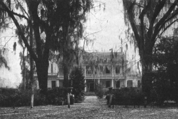
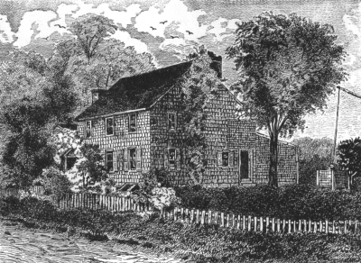
tenure became the dominant feature of a large section and gave a decided bent to the economic and political life of America.
Southern Plantation Mansion
The Small Freehold. —In the upland regions of the South, however, and throughout most of the North, the drift was against all forms of servitude and tenantry and in the direction of the freehold; that is, the small farm owned outright and tilled by the possessor and his family. This was favored by natural circumstances and the spirit of the immigrants. For one thing, the abundance of land and the scarcity of labor made it impossible for the companies, the proprietors, or the crown to develop over the whole continent a network of vast estates. In many sections, particularly in New England, the climate, the stony soil, the hills, and the narrow valleys conspired to keep the farms within a moderate compass. For another thing, the English, Scotch-Irish, and German peasants, even if they had been tenants in the Old World, did not propose to accept permanent dependency of any kind in the New. If they could not get freeholds, they would not settle at all; thus they forced proprietors and companies to bid for their enterprise by selling land in small lots. So it happened that the freehold of modest proportions became the cherished unit of American farmers. The people who tilled the farms were drawn from every quarter of western Europe; but the freehold system gave a uniform cast to their economic and social life in America.
From an old print
A New England Farmhouse
Social Effects of Land Tenure. —Land tenure and the process of western settlement thus developed two distinct types of people engaged in the same pursuit—agriculture. They had a common tie in that they both cultivated the soil and possessed the local interest and independence which arise from that occupation.
Their methods and their culture, however, differed widely.
The Southern planter, on his broad acres tilled by slaves, resembled the English landlord on his estates more than he did the colonial farmer who labored with his own hands in the fields and forests. He sold his rice and tobacco in large amounts directly to English factors, who took his entire crop in exchange for goods and cash. His fine clothes, silverware, china, and cutlery he bought in English markets. Loving the ripe old culture of the mother country, he often sent his sons to Oxford or Cambridge for their education.
In short, he depended very largely for his prosperity and his enjoyment of life upon close relations with the Old World. He did not even need market towns in which to buy native goods, for they were made on his own plantation by his own artisans who were usually gifted slaves.
The economic condition of the small farmer was totally different. His crops were not big enough to warrant direct connection with English factors or the personal maintenance of a corps of artisans. He needed local markets, and they sprang up to meet the need. Smiths, hatters, weavers, wagon-makers, and potters at neighboring towns supplied him with the rough products of their native skill. The finer goods, bought by the rich planter in England, the small farmer ordinarily could not buy. His wants were restricted to staples like tea and sugar, and between him and the European market stood the merchant. His community was therefore more self-sufficient than the seaboard line of great plantations. It was more isolated, more provincial, more independent, more American. The planter faced the Old East. The farmer faced the New West.
The Westward Movement. —Yeoman and planter nevertheless were alike in one respect. Their land hunger was never appeased. Each had the eye of an expert for new and fertile soil; and so, north and south, as soon as a foothold was secured on the Atlantic coast, the current of migration set in westward, creeping through forests, across rivers, and over mountains. Many of the later immigrants, in their search for cheap lands, were compelled to go to the border; but in a large part the path breakers to the West were native Americans of the second and third generations. Explorers, fired by curiosity and the lure of the mysterious unknown, and hunters, fur traders, and squatters, following their own sweet wills, blazed the trail, opening paths and sending back stories of the new regions they traversed. Then came the regular settlers with lawful titles to the lands they had purchased, sometimes singly and sometimes in companies.
In Massachusetts, the westward movement is recorded in the founding of Springfield in 1636 and Great Barrington in 1725. By the opening of the eighteenth century the pioneers of Connecticut had pushed north and west until their outpost towns adjoined the Hudson Valley settlements. In New York, the inland movement was directed by the Hudson River to Albany, and from that old Dutch center it radiated in every direction, particularly westward through the Mohawk Valley. New Jersey was early filled to its borders, the beginnings of the present city of New Brunswick being made in 1681 and those of Trenton in 1685. In Pennsylvania, as in New York, the waterways determined the main lines of advance. Pioneers, pushing up through the valley of the Schuylkill, spread over the fertile lands of Berks and Lancaster counties, laying out Reading in 1748. Another current of migration was directed by the Susquehanna, and, in 1726, the first farmhouse was built on the bank where Harrisburg was later founded. Along the southern tier of counties a thin line of settlements stretched westward to Pittsburgh, reaching the upper waters of the Ohio while the colony was still under the Penn family.
In the South the westward march was equally swift. The seaboard was quickly occupied by large planters and their slaves engaged in the cultivation of tobacco and rice. The Piedmont Plateau, lying back from the coast all the way from Maryland to Georgia, was fed by two streams of migration, one westward from the sea and the other southward from the other colonies—Germans from Pennsylvania and Scotch-Irish furnishing the main supply. "By 1770, tide-water Virginia was full to overflowing and the 'back country'
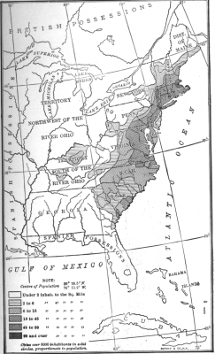
of the Blue Ridge and the Shenandoah was fully occupied. Even the mountain valleys ... were claimed by sturdy pioneers. Before the Declaration of Independence, the oncoming tide of home-seekers had reached the crest of the Alleghanies."
Distribution of Population, 1790
Beyond the mountains pioneers had already ventured, harbingers of an invasion that was about to break in upon Kentucky and Tennessee. As early as 1769 that mighty Nimrod, Daniel Boone, curious to hunt buffaloes, of which he had heard weird reports, passed through the Cumberland Gap and brought back news of a wonderful country awaiting the plow. A hint was sufficient. Singly, in pairs, and in groups, settlers followed the trail he had blazed. A great land corporation, the Transylvania Company, emulating the merchant adventurers of earlier times, secured a huge grant of territory and sought profits in quit rents from lands sold to farmers. By the outbreak of the Revolution there were several hundred people in the Kentucky region. Like the older colonists, they did not relish quit rents, and their opposition wrecked the Transylvania Company. They even carried their protests into the Continental Congress in 1776, for by that time they were our "embryo fourteenth colony."
Industrial and Commercial Development
Though the labor of the colonists was mainly spent in farming, there was a steady growth in industrial and commercial pursuits. Most of the staple industries of to-day, not omitting iron and textiles, have their beginnings in colonial times. Manufacturing and trade soon gave rise to towns which enjoyed an importance all out of proportion to their numbers. The great centers of commerce and finance on the seaboard originated in the days when the king of England was "lord of these dominions."
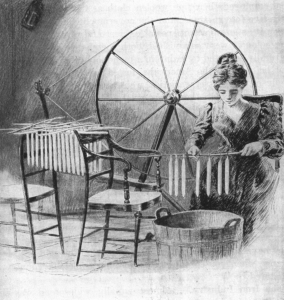
Domestic Industry: Dipping Tallow Candles
Textile Manufacture as a Domestic Industry. —Colonial women, in addition to sharing every hardship of pioneering, often the heavy labor of the open field, developed in the course of time a national industry which was almost exclusively their own. Wool and flax were raised in abundance in the North and South.
"Every farm house," says Coman, the economic historian, "was a workshop where the women spun and wove the serges, kerseys, and linsey-woolseys which served for the common wear." By the close of the seventeenth century, New England manufactured cloth in sufficient quantities to export it to the Southern colonies and to the West Indies. As the industry developed, mills were erected for the more difficult process of dyeing, weaving, and fulling, but carding and spinning continued to be done in the home. The Dutch of New Netherland, the Swedes of Delaware, and the Scotch-Irish of the interior "were not one whit behind their Yankee neighbors."
The importance of this enterprise to British economic life can hardly be overestimated. For many a century the English had employed their fine woolen cloth as the chief staple in a lucrative foreign trade, and the government had come to look upon it as an object of special interest and protection. When the colonies were established, both merchants and statesmen naturally expected to maintain a monopoly of increasing value; but before long the Americans, instead of buying cloth, especially of the coarser varieties, were making it to sell. In the place of customers, here were rivals. In the place of helpless reliance upon English markets, here was the germ of economic independence.
If British merchants had not discovered it in the ordinary course of trade, observant officers in the provinces would have conveyed the news to them. Even in the early years of the eighteenth century the royal governor of New York wrote of the industrious Americans to his home government: "The consequence will be that if they can clothe themselves once, not only comfortably, but handsomely too, without the help of England, they who already are not very fond of submitting to government will soon think of putting in execution designs they have long harboured in their breasts. This will not seem strange when you consider what sort of people this country is inhabited by."
The Iron Industry. —Almost equally widespread was the art of iron working—one of the earliest and most picturesque of colonial industries. Lynn, Massachusetts, had a forge and skilled artisans within fifteen years after the founding of Boston. The smelting of iron began at New London and New Haven about 1658; in Litchfield county, Connecticut, a few years later; at Great Barrington, Massachusetts, in 1731; and near by at Lenox some thirty years after that. New Jersey had iron works at Shrewsbury within
ten years after the founding of the colony in 1665. Iron forges appeared in the valleys of the Delaware and the Susquehanna early in the following century, and iron masters then laid the foundations of fortunes in a region destined to become one of the great iron centers of the world. Virginia began iron working in the year that saw the introduction of slavery. Although the industry soon lapsed, it was renewed and flourished in the eighteenth century. Governor Spotswood was called the "Tubal Cain" of the Old Dominion because he placed the industry on a firm foundation. Indeed it seems that every colony, except Georgia, had its iron foundry. Nails, wire, metallic ware, chains, anchors, bar and pig iron were made in large quantities; and Great Britain, by an act in 1750, encouraged the colonists to export rough iron to the British Islands.
Shipbuilding. —Of all the specialized industries in the colonies, shipbuilding was the most important. The abundance of fir for masts, oak for timbers and boards, pitch for tar and turpentine, and hemp for rope made the way of the shipbuilder easy. Early in the seventeenth century a ship was built at New Amsterdam, and by the middle of that century shipyards were scattered along the New England coast at Newburyport, Salem, New Bedford, Newport, Providence, New London, and New Haven. Yards at Albany and Poughkeepsie in New York built ships for the trade of that colony with England and the Indies. Wilmington and Philadelphia soon entered the race and outdistanced New York, though unable to equal the pace set by New England. While Maryland, Virginia, and South Carolina also built ships, Southern interest was mainly confined to the lucrative business of producing ship materials: fir, cedar, hemp, and tar.
Fishing. —The greatest single economic resource of New England outside of agriculture was the fisheries.
This industry, started by hardy sailors from Europe, long before the landing of the Pilgrims, flourished under the indomitable seamanship of the Puritans, who labored with the net and the harpoon in almost every quarter of the Atlantic. "Look," exclaimed Edmund Burke, in the House of Commons, "at the manner in which the people of New England have of late carried on the whale fishery. Whilst we follow them among the tumbling mountains of ice and behold them penetrating into the deepest frozen recesses of Hudson's Bay and Davis's Straits, while we are looking for them beneath the arctic circle, we hear that they have pierced into the opposite region of polar cold, that they are at the antipodes and engaged under the frozen serpent of the south.... Nor is the equinoctial heat more discouraging to them than the accumulated winter of both poles. We know that, whilst some of them draw the line and strike the harpoon on the coast of Africa, others run the longitude and pursue their gigantic game along the coast of Brazil.
No sea but what is vexed by their fisheries. No climate that is not witness to their toils. Neither the perseverance of Holland nor the activity of France nor the dexterous and firm sagacity of English enterprise ever carried this most perilous mode of hard industry to the extent to which it has been pushed by this recent people."
The influence of the business was widespread. A large and lucrative European trade was built upon it. The better quality of the fish caught for food was sold in the markets of Spain, Portugal, and Italy, or exchanged for salt, lemons, and raisins for the American market. The lower grades of fish were carried to the West Indies for slave consumption, and in part traded for sugar and molasses, which furnished the raw materials for the thriving rum industry of New England. These activities, in turn, stimulated shipbuilding, steadily enlarging the demand for fishing and merchant craft of every kind and thus keeping the shipwrights, calkers, rope makers, and other artisans of the seaport towns rushed with work. They also increased trade with the mother country for, out of the cash collected in the fish markets of Europe and the West Indies, the colonists paid for English manufactures. So an ever-widening circle of American enterprise centered around this single industry, the nursery of seamanship and the maritime spirit.
Oceanic Commerce and American Merchants. —All through the eighteenth century, the commerce of the American colonies spread in every direction until it rivaled in the number of people employed, the capital engaged, and the profits gleaned, the commerce of European nations. A modern historian has said:
"The enterprising merchants of New England developed a network of trade routes that covered well-nigh half the world." This commerce, destined to be of such significance in the conflict with the mother
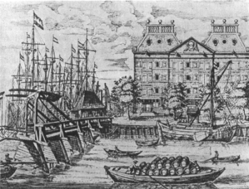
country, presented, broadly speaking, two aspects.
On the one side, it involved the export of raw materials and agricultural produce. The Southern colonies produced for shipping, tobacco, rice, tar, pitch, and pine; the Middle colonies, grain, flour, furs, lumber, and salt pork; New England, fish, flour, rum, furs, shoes, and small articles of manufacture. The variety of products was in fact astounding. A sarcastic writer, while sneering at the idea of an American union, once remarked of colonial trade: "What sort of dish will you make? New England will throw in fish and onions.
The middle states, flax-seed and flour. Maryland and Virginia will add tobacco. North Carolina, pitch, tar, and turpentine. South Carolina, rice and indigo, and Georgia will sprinkle the whole composition with sawdust. Such an absurd jumble will you make if you attempt to form a union among such discordant materials as the thirteen British provinces."
On the other side, American commerce involved the import trade, consisting principally of English and continental manufactures, tea, and "India goods." Sugar and molasses, brought from the West Indies, supplied the flourishing distilleries of Massachusetts, Rhode Island, and Connecticut. The carriage of slaves from Africa to the Southern colonies engaged hundreds of New England's sailors and thousands of pounds of her capital.
The disposition of imported goods in the colonies, though in part controlled by English factors located in America, employed also a large and important body of American merchants like the Willings and Morrises of Philadelphia; the Amorys, Hancocks, and Faneuils of Boston; and the Livingstons and Lows of New York. In their zeal and enterprise, they were worthy rivals of their English competitors, so celebrated for world-wide commercial operations. Though fully aware of the advantages they enjoyed in British markets and under the protection of the British navy, the American merchants were high-spirited and mettlesome, ready to contend with royal officers in order to shield American interests against outside interference.
The Dutch West India Warehouse in New Amsterdam (New York City)
Measured against the immense business of modern times, colonial commerce seems perhaps trivial. That, however, is not the test of its significance. It must be considered in relation to the growth of English colonial trade in its entirety—a relation which can be shown by a few startling figures. The whole export trade of England, including that to the colonies, was, in 1704, £6,509,000. On the eve of the American Revolution, namely, in 1772, English exports to the American colonies alone amounted to £6,024,000; in other words, almost as much as the whole foreign business of England two generations before. At the first date, colonial trade was but one-twelfth of the English export business; at the second date, it was considerably more than one-third. In 1704, Pennsylvania bought in English markets goods to the value of
£11,459; in 1772 the purchases of the same colony amounted to £507,909. In short, Pennsylvania imports increased fifty times within sixty-eight years, amounting in 1772 to almost the entire export trade of England to the colonies at the opening of the century. The American colonies were indeed a great source of wealth to English merchants.
Intercolonial Commerce. —Although the bad roads of colonial times made overland transportation difficult and costly, the many rivers and harbors along the coast favored a lively water-borne trade among the colonies. The Connecticut, Hudson, Delaware, and Susquehanna rivers in the North and the many smaller rivers in the South made it possible for goods to be brought from, and carried to, the interior regions in little sailing vessels with comparative ease. Sloops laden with manufactures, domestic and foreign, collected at some city like Providence, New York, or Philadelphia, skirted the coasts, visited small ports, and sailed up the navigable rivers to trade with local merchants who had for exchange the raw materials which they had gathered in from neighboring farms. Larger ships carried the grain, live stock, cloth, and hardware of New England to the Southern colonies, where they were traded for tobacco, leather, tar, and ship timber. From the harbors along the Connecticut shores there were frequent sailings down through Long Island Sound to Maryland, Virginia, and the distant Carolinas.
Growth of Towns. —In connection with this thriving trade and industry there grew up along the coast a number of prosperous commercial centers which were soon reckoned among the first commercial towns of the whole British empire, comparing favorably in numbers and wealth with such ports as Liverpool and Bristol. The statistical records of that time are mainly guesses; but we know that Philadelphia stood first in size among these towns. Serving as the port of entry for Pennsylvania, Delaware, and western Jersey, it had drawn within its borders, just before the Revolution, about 25,000 inhabitants. Boston was second in rank, with somewhat more than 20,000 people. New York, the "commercial capital of Connecticut and old East Jersey," was slightly smaller than Boston, but growing at a steady rate. The fourth town in size was Charleston, South Carolina, with about 10,000 inhabitants. Newport in Rhode Island, a center of rum manufacture and shipping, stood fifth, with a population of about 7000. Baltimore and Norfolk were counted as "considerable towns." In the interior, Hartford in Connecticut, Lancaster and York in Pennsylvania, and Albany in New York, with growing populations and increasing trade, gave prophecy of an urban America away from the seaboard. The other towns were straggling villages. Williamsburg, Virginia, for example, had about two hundred houses, in which dwelt a dozen families of the gentry and a few score of tradesmen. Inland county seats often consisted of nothing more than a log courthouse, a prison, and one wretched inn to house judges, lawyers, and litigants during the sessions of the court.
The leading towns exercised an influence on colonial opinion all out of proportion to their population.
They were the centers of wealth, for one thing; of the press and political activity, for another. Merchants and artisans could readily take concerted action on public questions arising from their commercial operations. The towns were also centers for news, gossip, religious controversy, and political discussion.
In the market places the farmers from the countryside learned of British policies and laws, and so, mingling with the townsmen, were drawn into the main currents of opinion which set in toward colonial nationalism and independence.
References
J. Bishop, History of American Manufactures (2 vols.).
E.L. Bogart, Economic History of the United States.
P.A. Bruce, Economic History of Virginia (2 vols.).
E. Semple, American History and Its Geographical Conditions.
W. Weeden, Economic and Social History of New England. (2 vols.).
Questions
1. Is land in your community parceled out into small farms? Contrast the system in your community with the feudal system of land tenure.
2. Are any things owned and used in common in your community? Why did common tillage fail in colonial times?
3. Describe the elements akin to feudalism which were introduced in the colonies.
4. Explain the success of freehold tillage.
5. Compare the life of the planter with that of the farmer.
6. How far had the western frontier advanced by 1776?
7. What colonial industry was mainly developed by women? Why was it very important both to the Americans and to the English?
8. What were the centers for iron working? Ship building?
9. Explain how the fisheries affected many branches of trade and industry.
10. Show how American trade formed a vital part of English business.
11. How was interstate commerce mainly carried on?
12. What were the leading towns? Did they compare in importance with British towns of the same period?
Research Topics
Land Tenure. —Coman, Industrial History (rev. ed.), pp. 32-38. Special reference: Bruce, Economic History of Virginia, Vol. I, Chap. VIII.
Tobacco Planting in Virginia. —Callender, Economic History of the United States, pp. 22-28.
Colonial Agriculture. —Coman, pp. 48-63. Callender, pp. 69-74. Reference: J.R.H. Moore, Industrial History of the American People, pp. 131-162.
Colonial Manufactures. —Coman, pp. 63-73. Callender, pp. 29-44. Special reference: Weeden, Economic and Social History of New England.
Colonial Commerce. —Coman, pp. 73-85. Callender, pp. 51-63, 78-84. Moore, pp. 163-208. Lodge, Short History of the English Colonies, pp. 409-412, 229-231, 312-314.
SOCIAL AND POLITICAL PROGRESS
Colonial life, crowded as it was with hard and unremitting toil, left scant leisure for the cultivation of the arts and sciences. There was little money in private purses or public treasuries to be dedicated to schools, libraries, and museums. Few there were with time to read long and widely, and fewer still who could devote their lives to things that delight the eye and the mind. And yet, poor and meager as the intellectual life of the colonists may seem by way of comparison, heroic efforts were made in every community to lift the people above the plane of mere existence. After the first clearings were opened in the forests those efforts were redoubled, and with lengthening years told upon the thought and spirit of the land. The appearance, during the struggle with England, of an extraordinary group of leaders familiar with history, political philosophy, and the arts of war, government, and diplomacy itself bore eloquent testimony to the high quality of the American intellect. No one, not even the most critical, can run through the writings of distinguished Americans scattered from Massachusetts to Georgia—the Adamses, Ellsworth, the Morrises, the Livingstons, Hamilton, Franklin, Washington, Madison, Marshall, Henry, the Randolphs, and the Pinckneys—without coming to the conclusion that there was something in American colonial life which fostered minds of depth and power. Women surmounted even greater difficulties than the men in the process of self-education, and their keen interest in public issues is evident in many a record like the Letters of Mrs. John Adams to her husband during the Revolution; the writings of Mrs. Mercy Otis Warren, the sister of James Otis, who measured her pen with the British propagandists; and the patriot newspapers founded and managed by women.
The Leadership of the Churches
In the intellectual life of America, the churches assumed a rôle of high importance. There were abundant reasons for this. In many of the colonies—Maryland, Pennsylvania, and New England—the religious impulse had been one of the impelling motives in stimulating immigration. In all the colonies, the clergy, at least in the beginning, formed the only class with any leisure to devote to matters of the spirit. They preached on Sundays and taught school on week days. They led in the discussion of local problems and in the formation of political opinion, so much of which was concerned with the relation between church and state. They wrote books and pamphlets. They filled most of the chairs in the colleges; under clerical guidance, intellectual and spiritual, the Americans received their formal education. In several of the provinces the Anglican Church was established by law. In New England the Puritans were supreme, notwithstanding the efforts of the crown to overbear their authority. In the Middle colonies, particularly, the multiplication of sects made the dominance of any single denomination impossible; and in all of them there was a growing diversity of faith, which promised in time a separation of church and state and freedom of opinion.
The Church of England. —Virginia was the stronghold of the English system of church and state. The Anglican faith and worship were prescribed by law, sustained by taxes imposed on all, and favored by the governor, the provincial councilors, and the richest planters. "The Established Church," says Lodge, "was one of the appendages of the Virginia aristocracy. They controlled the vestries and the ministers, and the parish church stood not infrequently on the estate of the planter who built and managed it." As in England, Catholics and Protestant Dissenters were at first laid under heavy disabilities. Only slowly and on sufferance were they admitted to the province; but when once they were even covertly tolerated, they pressed steadily in, until, by the Revolution, they outnumbered the adherents of the established order.
The Church was also sanctioned by law and supported by taxes in the Carolinas after 1704, and in Georgia after that colony passed directly under the crown in 1754—this in spite of the fact that the majority of the
inhabitants were Dissenters. Against the protests of the Catholics it was likewise established in Maryland.
In New York, too, notwithstanding the resistance of the Dutch, the Established Church was fostered by the provincial officials, and the Anglicans, embracing about one-fifteenth of the population, exerted an influence all out of proportion to their numbers.
Many factors helped to enhance the power of the English Church in the colonies. It was supported by the British government and the official class sent out to the provinces. Its bishops and archbishops in England were appointed by the king, and its faith and service were set forth by acts of Parliament. Having its seat of power in the English monarchy, it could hold its clergy and missionaries loyal to the crown and so counteract to some extent the independent spirit that was growing up in America. The Church, always a strong bulwark of the state, therefore had a political rôle to play here as in England. Able bishops and far-seeing leaders firmly grasped this fact about the middle of the eighteenth century and redoubled their efforts to augment the influence of the Church in provincial affairs. Unhappily for their plans they failed to calculate in advance the effect of their methods upon dissenting Protestants, who still cherished memories of bitter religious conflicts in the mother country.
Puritanism in New England. —If the established faith made for imperial unity, the same could not be said of Puritanism. The Plymouth Pilgrims had cast off all allegiance to the Anglican Church and established a separate and independent congregation before they came to America. The Puritans, essaying at first the task of reformers within the Church, soon after their arrival in Massachusetts, likewise flung off their yoke of union with the Anglicans. In each town a separate congregation was organized, the male members choosing the pastor, the teachers, and the other officers. They also composed the voters in the town meeting, where secular matters were determined. The union of church and government was thus complete, and uniformity of faith and life prescribed by law and enforced by civil authorities; but this worked for local autonomy instead of imperial unity.
The clergy became a powerful class, dominant through their learning and their fearful denunciations of the faithless. They wrote the books for the people to read—the famous Cotton Mather having three hundred and eighty-three books and pamphlets to his credit. In coöperation with the civil officers they enforced a strict observance of the Puritan Sabbath—a day of rest that began at six o'clock on Saturday evening and lasted until sunset on Sunday. All work, all trading, all amusement, and all worldly conversation were absolutely prohibited during those hours. A thoughtless maid servant who for some earthly reason smiled in church was in danger of being banished as a vagabond. Robert Pike, a devout Puritan, thinking the sun had gone to rest, ventured forth on horseback one Sunday evening and was luckless enough to have a ray of light strike him through a rift in the clouds. The next day he was brought into court and fined for "his ungodly conduct." With persons accused of witchcraft the Puritans were still more ruthless. When a mania of persecution swept over Massachusetts in 1692, eighteen people were hanged, one was pressed to death, many suffered imprisonment, and two died in jail.
Just about this time, however, there came a break in the uniformity of Puritan rule. The crown and church in England had long looked upon it with disfavor, and in 1684 King Charles II annulled the old charter of the Massachusetts Bay Company. A new document issued seven years later wrested from the Puritans of the colony the right to elect their own governor and reserved the power of appointment to the king. It also abolished the rule limiting the suffrage to church members, substituting for it a simple property qualification. Thus a royal governor and an official family, certain to be Episcopalian in faith and monarchist in sympathies, were forced upon Massachusetts; and members of all religious denominations, if they had the required amount of property, were permitted to take part in elections. By this act in the name of the crown, the Puritan monopoly was broken down in Massachusetts, and that province was brought into line with Connecticut, Rhode Island, and New Hampshire, where property, not religious faith, was the test for the suffrage.
Growth of Religious Toleration. —Though neither the Anglicans of Virginia nor the Puritans of
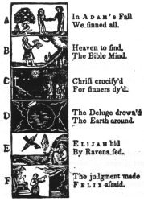
Massachusetts believed in toleration for other denominations, that principle was strictly applied in Rhode Island. There, under the leadership of Roger Williams, liberty in matters of conscience was established in the beginning. Maryland, by granting in 1649 freedom to those who professed to believe in Jesus Christ, opened its gates to all Christians; and Pennsylvania, true to the tenets of the Friends, gave freedom of conscience to those "who confess and acknowledge the one Almighty and Eternal God to be the creator, upholder, and ruler of the World." By one circumstance or another, the Middle colonies were thus early characterized by diversity rather than uniformity of opinion. Dutch Protestants, Huguenots, Quakers, Baptists, Presbyterians, New Lights, Moravians, Lutherans, Catholics, and other denominations became too strongly intrenched and too widely scattered to permit any one of them to rule, if it had desired to do so. There were communities and indeed whole sections where one or another church prevailed, but in no colony was a legislature steadily controlled by a single group. Toleration encouraged diversity, and diversity, in turn, worked for greater toleration.
The government and faith of the dissenting denominations conspired with economic and political tendencies to draw America away from the English state. Presbyterians, Quakers, Baptists, and Puritans had no hierarchy of bishops and archbishops to bind them to the seat of power in London. Neither did they look to that metropolis for guidance in interpreting articles of faith. Local self-government in matters ecclesiastical helped to train them for local self-government in matters political. The spirit of independence which led Dissenters to revolt in the Old World, nourished as it was amid favorable circumstances in the New World, made them all the more zealous in the defense of every right against authority imposed from without.
Schools and Colleges
Religion and Local Schools. —One of the first cares of each Protestant denomination was the education of the children in the faith. In this work the Bible became the center of interest. The English version was indeed the one book of the people. Farmers, shopkeepers, and artisans, whose life had once been bounded by the daily routine of labor, found in the Scriptures not only an inspiration to religious conduct, but also a book of romance, travel, and history. "Legend and annal," says John Richard Green, "war-song and psalm, state-roll and biography, the mighty voices of prophets, the parables of Evangelists, stories of mission journeys, of perils by sea and among the heathen, philosophic arguments, apocalyptic visions, all were flung broadcast over minds unoccupied for the most part by any rival learning.... As a mere literary monument, the English version of the Bible remains the noblest example of the English tongue." It was the King James version just from the press that the Pilgrims brought across the sea with them.
A Page from a Famous Schoolbook
For the authority of the Established Church was substituted the authority of the Scriptures. The Puritans devised a catechism based upon their interpretation of the Bible, and, very soon after their arrival in America, they ordered all parents and masters of servants to be diligent in seeing that their children and wards were taught to read religious works and give answers to the religious questions. Massachusetts was scarcely twenty years old before education of this character was declared to be compulsory, and provision was made for public schools where those not taught at home could receive instruction in reading and writing.
Outside of New England the idea of compulsory education was not regarded with the same favor; but the whole land was nevertheless dotted with little schools kept by "dames, itinerant teachers, or local parsons."
Whether we turn to the life of Franklin in the North or Washington in the South, we read of tiny schoolhouses, where boys, and sometimes girls, were taught to read and write. Where there were no schools, fathers and mothers of the better kind gave their children the rudiments of learning. Though illiteracy was widespread, there is evidence to show that the diffusion of knowledge among the masses was making steady progress all through the eighteenth century.
Religion and Higher Learning. —Religious motives entered into the establishment of colleges as well as local schools. Harvard, founded in 1636, and Yale, opened in 1718, were intended primarily to train
"learned and godly ministers" for the Puritan churches of New England. To the far North, Dartmouth, chartered in 1769, was designed first as a mission to the Indians and then as a college for the sons of New England farmers preparing to preach, teach, or practice law. The College of New Jersey, organized in 1746
and removed to Princeton eleven years later, was sustained by the Presbyterians. Two colleges looked to the Established Church as their source of inspiration and support: William and Mary, founded in Virginia in 1693, and King's College, now Columbia University, chartered by King George II in 1754, on an appeal from the New York Anglicans, alarmed at the growth of religious dissent and the "republican tendencies"
of the age. Two colleges revealed a drift away from sectarianism. Brown, established in Rhode Island in 1764, and the Philadelphia Academy, forerunner of the University of Pennsylvania, organized by Benjamin Franklin, reflected the spirit of toleration by giving representation on the board of trustees to several religious sects. It was Franklin's idea that his college should prepare young men to serve in public office as leaders of the people and ornaments to their country.
Self-education in America. —Important as were these institutions of learning, higher education was by no means confined within their walls. Many well-to-do families sent their sons to Oxford or Cambridge in England. Private tutoring in the home was common. In still more families there were intelligent children who grew up in the great colonial school of adversity and who trained themselves until, in every contest of mind and wit, they could vie with the sons of Harvard or William and Mary or any other college. Such, for example, was Benjamin Franklin, whose charming autobiography, in addition to being an American classic, is a fine record of self-education. His formal training in the classroom was limited to a few years at a local school in Boston; but his self-education continued throughout his life. He early manifested a zeal for reading, and devoured, he tells us, his father's dry library on theology, Bunyan's works, Defoe's writings, Plutarch's Lives, Locke's On the Human Understanding, and innumerable volumes dealing with secular subjects. His literary style, perhaps the best of his time, Franklin acquired by the diligent and repeated analysis of the Spectator. In a life crowded with labors, he found time to read widely in natural science and to win single-handed recognition at the hands of European savants for his discoveries in electricity. By his own efforts he "attained an acquaintance" with Latin, Italian, French, and Spanish, thus unconsciously preparing himself for the day when he was to speak for all America at the court of the king of France.
Lesser lights than Franklin, educated by the same process, were found all over colonial America. From this fruitful source of native ability, self-educated, the American cause drew great strength in the trials of the Revolution.
The Rise of the Newspaper. —The evolution of American democracy into a government by public opinion, enlightened by the open discussion of political questions, was in no small measure aided by a free press. That too, like education, was a matter of slow growth. A printing press was brought to Massachusetts in 1639, but it was put in charge of an official censor and limited to the publication of religious works. Forty years elapsed before the first newspaper appeared, bearing the curious title, Public Occurrences Both Foreign and Domestic, and it had not been running very long before the government of Massachusetts suppressed it for discussing a political question.
Publishing, indeed, seemed to be a precarious business; but in 1704 there came a second venture in journalism, The Boston NewsLetter, which proved to be a more lasting enterprise because it refrained from criticizing the authorities. Still the public interest languished. When Franklin's brother, James, began to issue his New England Courant about 1720, his friends sought to dissuade him, saying that one newspaper was enough for America. Nevertheless he continued it; and his confidence in the future was rewarded. In nearly every colony a gazette or chronicle appeared within the next thirty years or more.
Benjamin Franklin was able to record in 1771 that America had twenty-five newspapers. Boston led with five. Philadelphia had three: two in English and one in German.
Censorship and Restraints on the Press. —The idea of printing, unlicensed by the government and uncontrolled by the church, was, however, slow in taking form. The founders of the American colonies had never known what it was to have the free and open publication of books, pamphlets, broadsides, and newspapers. When the art of printing was first discovered, the control of publishing was vested in clerical authorities. After the establishment of the State Church in England in the reign of Elizabeth, censorship of the press became a part of royal prerogative. Printing was restricted to Oxford, Cambridge, and London; and no one could publish anything without previous approval of the official censor. When the Puritans were in power, the popular party, with a zeal which rivaled that of the crown, sought, in turn, to silence royalist and clerical writers by a vigorous censorship. After the restoration of the monarchy, control of the press was once more placed in royal hands, where it remained until 1695, when Parliament, by failing to renew the licensing act, did away entirely with the official censorship. By that time political parties were so powerful and so active and printing presses were so numerous that official review of all published matter became a sheer impossibility.
In America, likewise, some troublesome questions arose in connection with freedom of the press. The Puritans of Massachusetts were no less anxious than King Charles or the Archbishop of London to shut out from the prying eyes of the people all literature "not mete for them to read"; and so they established a system of official licensing for presses, which lasted until 1755. In the other colonies where there was more diversity of opinion and publishers could set up in business with impunity, they were nevertheless constantly liable to arrest for printing anything displeasing to the colonial governments. In 1721 the editor of the Mercury in Philadelphia was called before the proprietary council and ordered to apologize for a political article, and for a later offense of a similar character he was thrown into jail. A still more famous case was that of Peter Zenger, a New York publisher, who was arrested in 1735 for criticising the administration. Lawyers who ventured to defend the unlucky editor were deprived of their licenses to practice, and it became necessary to bring an attorney all the way from Philadelphia. By this time the tension of feeling was high, and the approbation of the public was forthcoming when the lawyer for the defense exclaimed to the jury that the very cause of liberty itself, not that of the poor printer, was on trial!
The verdict for Zenger, when it finally came, was the signal for an outburst of popular rejoicing. Already the people of King George's province knew how precious a thing is the freedom of the press.
Thanks to the schools, few and scattered as they were, and to the vigilance of parents, a very large portion,
perhaps nearly one-half, of the colonists could read. Through the newspapers, pamphlets, and almanacs that streamed from the types, the people could follow the course of public events and grasp the significance of political arguments. An American opinion was in the process of making—an independent opinion nourished by the press and enriched by discussions around the fireside and at the taverns. When the day of resistance to British rule came, government by opinion was at hand. For every person who could hear the voice of Patrick Henry and Samuel Adams, there were a thousand who could see their appeals on the printed page. Men who had spelled out their letters while poring over Franklin's Poor Richard's Almanac lived to read Thomas Paine's thrilling call to arms.
The Evolution in Political Institutions
Two very distinct lines of development appeared in colonial politics. The one, exalting royal rights and aristocratic privileges, was the drift toward provincial government through royal officers appointed in England. The other, leading toward democracy and self-government, was the growth in the power of the popular legislative assembly. Each movement gave impetus to the other, with increasing force during the passing years, until at last the final collision between the two ideals of government came in the war of independence.
The Royal Provinces. —Of the thirteen English colonies eight were royal provinces in 1776, with governors appointed by the king. Virginia passed under the direct rule of the crown in 1624, when the charter of the London Company was annulled. The Massachusetts Bay corporation lost its charter in 1684, and the new instrument granted seven years later stripped the colonists of the right to choose their chief executive. In the early decades of the eighteenth century both the Carolinas were given the provincial instead of the proprietary form. New Hampshire, severed from Massachusetts in 1679, and Georgia, surrendered by the trustees in 1752, went into the hands of the crown. New York, transferred to the Duke of York on its capture from the Dutch in 1664, became a province when he took the title of James II in 1685. New Jersey, after remaining for nearly forty years under proprietors, was brought directly under the king in 1702. Maryland, Pennsylvania, and Delaware, although they retained their proprietary character until the Revolution, were in some respects like the royal colonies, for their governors were as independent of popular choice as were the appointees of King George. Only two colonies, Rhode Island and Connecticut, retained full self-government on the eve of the Revolution. They alone had governors and legislatures entirely of their own choosing.
The chief officer of the royal province was the governor, who enjoyed high and important powers which he naturally sought to augment at every turn. He enforced the laws and, usually with the consent of a council, appointed the civil and military officers. He granted pardons and reprieves; he was head of the highest court; he was commander-in-chief of the militia; he levied troops for defense and enforced martial law in time of invasion, war, and rebellion. In all the provinces, except Massachusetts, he named the councilors who composed the upper house of the legislature and was likely to choose those who favored his claims. He summoned, adjourned, and dissolved the popular assembly, or the lower house; he laid before it the projects of law desired by the crown; and he vetoed measures which he thought objectionable.
Here were in America all the elements of royal prerogative against which Hampden had protested and Cromwell had battled in England.
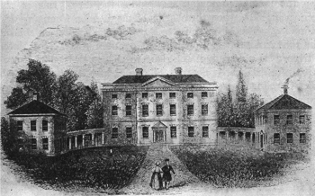
The Royal Governor's Palace at New Berne
The colonial governors were generally surrounded by a body of office-seekers and hunters for land grants.
Some of them were noblemen of broken estates who had come to America to improve their fortunes. The pretensions of this circle grated on colonial nerves, and privileges granted to them, often at the expense of colonists, did much to deepen popular antipathy to the British government. Favors extended to adherents of the Established Church displeased Dissenters. The reappearance of this formidable union of church and state, from which they had fled, stirred anew the ancient wrath against that combination.
The Colonial Assembly. —Coincident with the drift toward administration through royal governors was the second and opposite tendency, namely, a steady growth in the practice of self-government. The voters of England had long been accustomed to share in taxation and lawmaking through representatives in Parliament, and the idea was early introduced in America. Virginia was only twelve years old (1619) when its first representative assembly appeared. As the towns of Massachusetts multiplied and it became impossible for all the members of the corporation to meet at one place, the representative idea was adopted, in 1633. The river towns of Connecticut formed a representative system under their
"Fundamental Orders" of 1639, and the entire colony was given a royal charter in 1662. Generosity, as well as practical considerations, induced such proprietors as Lord Baltimore and William Penn to invite their colonists to share in the government as soon as any considerable settlements were made. Thus by one process or another every one of the colonies secured a popular assembly.
It is true that in the provision for popular elections, the suffrage was finally restricted to property owners or taxpayers, with a leaning toward the freehold qualification. In Virginia, the rural voter had to be a freeholder owning at least fifty acres of land, if there was no house on it, or twenty-five acres with a house twenty-five feet square. In Massachusetts, the voter for member of the assembly under the charter of 1691
had to be a freeholder of an estate worth forty shillings a year at least or of other property to the value of forty pounds sterling. In Pennsylvania, the suffrage was granted to freeholders owning fifty acres or more of land well seated, twelve acres cleared, and to other persons worth at least fifty pounds in lawful money.
Restrictions like these undoubtedly excluded from the suffrage a very considerable number of men, particularly the mechanics and artisans of the towns, who were by no means content with their position.
Nevertheless, it was relatively easy for any man to acquire a small freehold, so cheap and abundant was land; and in fact a large proportion of the colonists were land owners. Thus the assemblies, in spite of the limited suffrage, acquired a democratic tone.
The popular character of the assemblies increased as they became engaged in battles with the royal and proprietary governors. When called upon by the executive to make provision for the support of the administration, the legislature took advantage of the opportunity to make terms in the interest of the taxpayers. It made annual, not permanent, grants of money to pay official salaries and then insisted upon
electing a treasurer to dole it out. Thus the colonists learned some of the mysteries of public finance, as well as the management of rapacious officials. The legislature also used its power over money grants to force the governor to sign bills which he would otherwise have vetoed.
Contests between Legislatures and Governors. —As may be imagined, many and bitter were the contests between the royal and proprietary governors and the colonial assemblies. Franklin relates an amusing story of how the Pennsylvania assembly held in one hand a bill for the executive to sign and, in the other hand, the money to pay his salary. Then, with sly humor, Franklin adds: "Do not, my courteous reader, take pet at our proprietary constitution for these our bargain and sale proceedings in legislation. It is a happy country where justice and what was your own before can be had for ready money. It is another addition to the value of money and of course another spur to industry. Every land is not so blessed."
It must not be thought, however, that every governor got off as easily as Franklin's tale implies. On the contrary, the legislatures, like Cæsar, fed upon meat that made them great and steadily encroached upon executive prerogatives as they tried out and found their strength. If we may believe contemporary laments, the power of the crown in America was diminishing when it was struck down altogether. In New York, the friends of the governor complained in 1747 that "the inhabitants of plantations are generally educated in republican principles; upon republican principles all is conducted. Little more than a shadow of royal authority remains in the Northern colonies." "Here," echoed the governor of South Carolina, the following year, "levelling principles prevail; the frame of the civil government is unhinged; a governor, if he would be idolized, must betray his trust; the people have got their whole administration in their hands; the election of the members of the assembly is by ballot; not civil posts only, but all ecclesiastical preferments, are in the disposal or election of the people."
Though baffled by the "levelling principles" of the colonial assemblies, the governors did not give up the case as hopeless. Instead they evolved a system of policy and action which they thought could bring the obstinate provincials to terms. That system, traceable in their letters to the government in London, consisted of three parts: (1) the royal officers in the colonies were to be made independent of the legislatures by taxes imposed by acts of Parliament; (2) a British standing army was to be maintained in America; (3) the remaining colonial charters were to be revoked and government by direct royal authority was to be enlarged.
Such a system seemed plausible enough to King George III and to many ministers of the crown in London.
With governors, courts, and an army independent of the colonists, they imagined it would be easy to carry out both royal orders and acts of Parliament. This reasoning seemed both practical and logical. Nor was it founded on theory, for it came fresh from the governors themselves. It was wanting in one respect only. It failed to take account of the fact that the American people were growing strong in the practice of self-government and could dispense with the tutelage of the British ministry, no matter how excellent it might be or how benevolent its intentions.
References
A.M. Earle, Home Life in Colonial Days.
A.L. Cross, The Anglican Episcopate and the American Colonies (Harvard Studies).
E.G. Dexter, History of Education in the United States.
C.A. Duniway, Freedom of the Press in Massachusetts.
Benjamin Franklin, Autobiography.
E.B. Greene, The Provincial Governor (Harvard Studies).
A.E. McKinley, The Suffrage Franchise in the Thirteen English Colonies (Pennsylvania University Studies).
M.C. Tyler, History of American Literature during the Colonial Times (2 vols.).
Questions
1. Why is leisure necessary for the production of art and literature? How may leisure be secured?
2. Explain the position of the church in colonial life.
3. Contrast the political rôles of Puritanism and the Established Church.
4. How did diversity of opinion work for toleration?
5. Show the connection between religion and learning in colonial times.
6. Why is a "free press" such an important thing to American democracy?
7. Relate some of the troubles of early American publishers.
8. Give the undemocratic features of provincial government.
9. How did the colonial assemblies help to create an independent American spirit, in spite of a restricted suffrage?
10. Explain the nature of the contests between the governors and the legislatures.
Research Topics
Religious and Intellectual Life. —Lodge, Short History of the English Colonies: (1) in New England, pp.
418-438, 465-475; (2) in Virginia, pp. 54-61, 87-89; (3) in Pennsylvania, pp. 232-237, 253-257; (4) in New York, pp. 316-321. Interesting source materials in Hart, American History Told by Contemporaries, Vol. II, pp. 255-275, 276-290.
The Government of a Royal Province, Virginia. —Lodge, pp. 43-50. Special Reference: E.B. Greene, The Provincial Governor (Harvard Studies).
The Government of a Proprietary Colony, Pennsylvania. —Lodge, pp. 230-232.
Government in New England. —Lodge, pp. 412-417.
The Colonial Press. —Special Reference: G.H. Payne, History of Journalism in the United States (1920).
Colonial Life in General. —John Fiske, Old Virginia and Her Neighbors, Vol. II, pp. 174-269; Elson, History of the United States, pp. 197-210.
Colonial Government in General. —Elson, pp. 210-216.
THE DEVELOPMENT OF COLONIAL NATIONALISM
It is one of the well-known facts of history that a people loosely united by domestic ties of a political and economic nature, even a people torn by domestic strife, may be welded into a solid and compact body by an attack from a foreign power. The imperative call to common defense, the habit of sharing common burdens, the fusing force of common service—these things, induced by the necessity of resisting outside interference, act as an amalgam drawing together all elements, except, perhaps, the most discordant. The presence of the enemy allays the most virulent of quarrels, temporarily at least. "Politics," runs an old saying, "stops at the water's edge."
This ancient political principle, so well understood in diplomatic circles, applied nearly as well to the original thirteen American colonies as to the countries of Europe. The necessity for common defense, if not equally great, was certainly always pressing. Though it has long been the practice to speak of the early settlements as founded in "a wilderness," this was not actually the case. From the earliest days of Jamestown on through the years, the American people were confronted by dangers from without. All about their tiny settlements were Indians, growing more and more hostile as the frontier advanced and as sharp conflicts over land aroused angry passions. To the south and west was the power of Spain, humiliated, it is true, by the disaster to the Armada, but still presenting an imposing front to the British empire. To the north and west were the French, ambitious, energetic, imperial in temper, and prepared to contest on land and water the advance of British dominion in America.
Relations with the Indians and the French
Indian Affairs. —It is difficult to make general statements about the relations of the colonists to the Indians. The problem was presented in different shape in different sections of America. It was not handled according to any coherent or uniform plan by the British government, which alone could speak for all the provinces at the same time. Neither did the proprietors and the governors who succeeded one another, in an irregular train, have the consistent policy or the matured experience necessary for dealing wisely with Indian matters. As the difficulties arose mainly on the frontiers, where the restless and pushing pioneers were making their way with gun and ax, nearly everything that happened was the result of chance rather than of calculation. A personal quarrel between traders and an Indian, a jug of whisky, a keg of gunpowder, the exchange of guns for furs, personal treachery, or a flash of bad temper often set in motion destructive forces of the most terrible character.
On one side of the ledger may be set innumerable generous records—of Squanto and Samoset teaching the Pilgrims the ways of the wilds; of Roger Williams buying his lands from the friendly natives; or of William Penn treating with them on his arrival in America. On the other side of the ledger must be recorded many a cruel and bloody conflict as the frontier rolled westward with deadly precision. The Pequots on the Connecticut border, sensing their doom, fell upon the tiny settlements with awful fury in 1637 only to meet with equally terrible punishment. A generation later, King Philip, son of Massasoit, the friend of the Pilgrims, called his tribesmen to a war of extermination which brought the strength of all New England to the field and ended in his own destruction. In New York, the relations with the Indians, especially with the Algonquins and the Mohawks, were marked by periodic and desperate wars. Virginia and her Southern neighbors suffered as did New England. In 1622 Opecacano, a brother of Powhatan, the
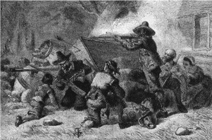
friend of the Jamestown settlers, launched a general massacre; and in 1644 he attempted a war of extermination. In 1675 the whole frontier was ablaze. Nathaniel Bacon vainly attempted to stir the colonial governor to put up an adequate defense and, failing in that plea, himself headed a revolt and a successful expedition against the Indians. As the Virginia outposts advanced into the Kentucky country, the strife with the natives was transferred to that "dark and bloody ground"; while to the southeast, a desperate struggle with the Tuscaroras called forth the combined forces of the two Carolinas and Virginia.
From an old print
Virginians Defending Themselves against the Indians
From such horrors New Jersey and Delaware were saved on account of their geographical location.
Pennsylvania, consistently following a policy of conciliation, was likewise spared until her western vanguard came into full conflict with the allied French and Indians. Georgia, by clever negotiations and treaties of alliance, managed to keep on fair terms with her belligerent Cherokees and Creeks. But neither diplomacy nor generosity could stay the inevitable conflict as the frontier advanced, especially after the French soldiers enlisted the Indians in their imperial enterprises. It was then that desultory fighting became general warfare.
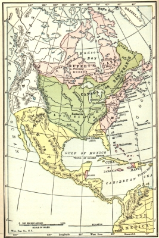
English, French, and Spanish Possessions in America, 1750
Early Relations with the French. —During the first decades of French exploration and settlement in the St. Lawrence country, the English colonies, engrossed with their own problems, gave little or no thought to their distant neighbors. Quebec, founded in 1608, and Montreal, in 1642, were too far away, too small in population, and too slight in strength to be much of a menace to Boston, Hartford, or New York. It was the statesmen in France and England, rather than the colonists in America, who first grasped the significance of the slowly converging empires in North America. It was the ambition of Louis XIV of France, rather than the labors of Jesuit missionaries and French rangers, that sounded the first note of colonial alarm.
Evidence of this lies in the fact that three conflicts between the English and the French occurred before their advancing frontiers met on the Pennsylvania border. King William's War (1689-1697), Queen Anne's War (1701-1713), and King George's War (1744-1748) owed their origins and their endings mainly to the intrigues and rivalries of European powers, although they all involved the American colonies in struggles with the French and their savage allies.
The Clash in the Ohio Valley. —The second of these wars had hardly closed, however, before the English colonists themselves began to be seriously alarmed about the rapidly expanding French dominion in the West. Marquette and Joliet, who opened the Lake region, and La Salle, who in 1682 had gone down the Mississippi to the Gulf, had been followed by the builders of forts. In 1718, the French founded New Orleans, thus taking possession of the gateway to the Mississippi as well as the St. Lawrence. A few years later they built Fort Niagara; in 1731 they occupied Crown Point; in 1749 they formally announced their dominion over all the territory drained by the Ohio River. Having asserted this lofty claim, they set out to make it good by constructing in the years 1752-1754 Fort Le Bœuf near Lake Erie, Fort Venango on the upper waters of the Allegheny, and Fort Duquesne at the junction of the streams forming the Ohio. Though they were warned by George Washington, in the name of the governor of Virginia, to keep out of territory
"so notoriously known to be property of the crown of Great Britain," the French showed no signs of
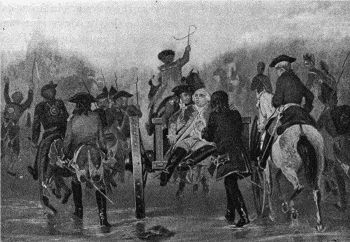
relinquishing their pretensions.
From an old print
Braddock's Retreat
The Final Phase—the French and Indian War. —Thus it happened that the shot which opened the Seven Years' War, known in America as the French and Indian War, was fired in the wilds of Pennsylvania. There began the conflict that spread to Europe and even Asia and finally involved England and Prussia, on the one side, and France, Austria, Spain, and minor powers on the other. On American soil, the defeat of Braddock in 1755 and Wolfe's exploit in capturing Quebec four years later were the dramatic features. On the continent of Europe, England subsidized Prussian arms to hold France at bay. In India, on the banks of the Ganges, as on the banks of the St. Lawrence, British arms were triumphant. Well could the historian write: "Conquests equaling in rapidity and far surpassing in magnitude those of Cortes and Pizarro had been achieved in the East." Well could the merchants of London declare that under the administration of William Pitt, the imperial genius of this world-wide conflict, commerce had been "united with and made to flourish by war."
From the point of view of the British empire, the results of the war were momentous. By the peace of 1763, Canada and the territory east of the Mississippi, except New Orleans, passed under the British flag.
The remainder of the Louisiana territory was transferred to Spain and French imperial ambitions on the American continent were laid to rest. In exchange for Havana, which the British had seized during the war, Spain ceded to King George the colony of Florida. Not without warrant did Macaulay write in after years that Pitt "was the first Englishman of his time; and he had made England the first country in the world."
The Effects of Warfare on the Colonies
The various wars with the French and the Indians, trivial in detail as they seem to-day, had a profound influence on colonial life and on the destiny of America. Circumstances beyond the control of popular assemblies, jealous of their individual powers, compelled
coöperation among them, grudging and stingy no doubt, but still coöperation. The American people, more eager to be busy in their fields or at their trades, were simply forced to raise and support armies, to learn the arts of warfare, and to practice, if in a small theater, the science of statecraft. These forces, all cumulative, drove the colonists, so tenaciously provincial in their habits, in the direction of nationalism.
The New England Confederation. —It was in their efforts to deal with the problems presented by the
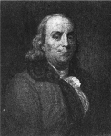
Indian and French menace that the Americans took the first steps toward union. Though there were many common ties among the settlers of New England, it required a deadly fear of the Indians to produce in 1643 the New England Confederation, composed of Massachusetts, Plymouth, Connecticut, and New Haven. The colonies so united were bound together in "a firm and perpetual league of friendship and amity for offense and defense, mutual service and succor, upon all just occasions." They made provision for distributing the burdens of wars among the members and provided for a congress of commissioners from each colony to determine upon common policies. For some twenty years the Confederation was active and it continued to hold meetings until after the extinction of the Indian peril on the immediate border.
Virginia, no less than Massachusetts, was aware of the importance of intercolonial coöperation. In the middle of the seventeenth century, the Old Dominion began treaties of commerce and amity with New York and the colonies of New England. In 1684 delegates from Virginia met at Albany with the agents of New York and Massachusetts to discuss problems of mutual defense. A few years later the Old Dominion coöperated loyally with the Carolinas in defending their borders against Indian forays.
The Albany Plan of Union. —An attempt at a general colonial union was made in 1754. On the suggestion of the Lords of Trade in England, a conference was held at Albany to consider Indian relations, to devise measures of defense against the French, and to enter into "articles of union and confederation for the general defense of his Majesty's subjects and interests in North America as well in time of peace as of war." New Hampshire, Massachusetts, Connecticut, Rhode Island, New York, Pennsylvania, and Maryland were represented. After a long discussion, a plan of union, drafted mainly, it seems, by Benjamin Franklin, was adopted and sent to the colonies and the crown for approval. The colonies, jealous of their individual rights, refused to accept the scheme and the king disapproved it for the reason, Franklin said, that it had "too much weight in the democratic part of the constitution." Though the Albany union failed, the document is still worthy of study because it forecast many of the perplexing problems that were not solved until thirty-three years afterward, when another convention of which also Franklin was a member drafted the Constitution of the United States.
Benjamin Franklin
The Military Education of the Colonists. —The same wars that showed the provincials the meaning of union likewise instructed them in the art of defending their institutions. Particularly was this true of the last French and Indian conflict, which stretched all the way from Maine to the Carolinas and made heavy calls upon them all for troops. The answer, it is admitted, was far from satisfactory to the British government and the conduct of the militiamen was far from professional; but thousands of Americans got a taste, a strong taste, of actual fighting in the field. Men like George Washington and Daniel Morgan learned lessons that were not forgotten in after years. They saw what American militiamen could do under favorable circumstances and they watched British regulars operating on American soil. "This whole transaction," shrewdly remarked Franklin of Braddock's campaign, "gave us Americans the first suspicion that our exalted ideas of the prowess of British regular troops had not been well founded." It was no mere accident that the Virginia colonel who drew his sword under the elm at Cambridge and took command of the army of the Revolution was the brave officer who had "spurned the whistle of bullets" at the
memorable battle in western Pennsylvania.
Financial Burdens and Commercial Disorder. —While the provincials were learning lessons in warfare they were also paying the bills. All the conflicts were costly in treasure as in blood. King Philip's war left New England weak and almost bankrupt. The French and Indian struggle was especially expensive. The twenty-five thousand men put in the field by the colonies were sustained only by huge outlays of money.
Paper currency streamed from the press and debts were accumulated. Commerce was driven from its usual channels and prices were enhanced. When the end came, both England and America were staggering under heavy liabilities, and to make matters worse there was a fall of prices accompanied by a commercial depression which extended over a period of ten years. It was in the midst of this crisis that measures of taxation had to be devised to pay the cost of the war, precipitating the quarrel which led to American independence.
The Expulsion of French Power from North America. —The effects of the defeat administered to France, as time proved, were difficult to estimate. Some British statesmen regarded it as a happy circumstance that the colonists, already restive under their administration, had no foreign power at hand to aid them in case they struck for independence. American leaders, on the other hand, now that the soldiers of King Louis were driven from the continent, thought that they had no other country to fear if they cast off British sovereignty. At all events, France, though defeated, was not out of the sphere of American influence; for, as events proved, it was the fortunate French alliance negotiated by Franklin that assured the triumph of American arms in the War of the Revolution.
Colonial Relations with the British Government
It was neither the Indian wars nor the French wars that finally brought forth American nationality. That was the product of the long strife with the mother country which culminated in union for the war of independence. The forces that created this nation did not operate in the colonies alone. The character of the English sovereigns, the course of events in English domestic politics, and English measures of control over the colonies—executive, legislative, and judicial—must all be taken into account.
The Last of the Stuarts. —The struggles between Charles I (1625-49) and the parliamentary party and the turmoil of the Puritan régime (1649-60) so engrossed the attention of Englishmen at home that they had little time to think of colonial policies or to interfere with colonial affairs. The restoration of the monarchy in 1660, accompanied by internal peace and the increasing power of the mercantile classes in the House of Commons, changed all that. In the reign of Charles II (1660-85), himself an easy-going person, the policy of regulating trade by act of Parliament was developed into a closely knit system and powerful agencies to supervise the colonies were created. At the same time a system of stricter control over the dominions was ushered in by the annulment of the old charter of Massachusetts which conferred so much self-government on the Puritans.
Charles' successor, James II, a man of sterner stuff and jealous of his authority in the colonies as well as at home, continued the policy thus inaugurated and enlarged upon it. If he could have kept his throne, he would have bent the Americans under a harsh rule or brought on in his dominions a revolution like that which he precipitated at home in 1688. He determined to unite the Northern colonies and introduce a more efficient administration based on the pattern of the royal provinces. He made a martinet, Sir Edmund Andros, governor of all New England, New York, and New Jersey. The charter of Massachusetts, annulled in the last days of his brother's reign, he continued to ignore, and that of Connecticut would have been seized if it had not been spirited away and hidden, according to tradition, in a hollow oak.
For several months, Andros gave the Northern colonies a taste of ill-tempered despotism. He wrung quit rents from land owners not accustomed to feudal dues; he abrogated titles to land where, in his opinion,
they were unlawful; he forced the Episcopal service upon the Old South Church in Boston; and he denied the writ of habeas corpus to a preacher who denounced taxation without representation. In the middle of his arbitrary course, however, his hand was stayed. The news came that King James had been dethroned by his angry subjects, and the people of Boston, kindling a fire on Beacon Hill, summoned the countryside to dispose of Andros. The response was prompt and hearty. The hated governor was arrested, imprisoned, and sent back across the sea under guard.
The overthrow of James, followed by the accession of William and Mary and by assured parliamentary supremacy, had an immediate effect in the colonies. The new order was greeted with thanksgiving.
Massachusetts was given another charter which, though not so liberal as the first, restored the spirit if not the entire letter of self-government. In the other colonies where Andros had been operating, the old course of affairs was resumed.
The Indifference of the First Two Georges. —On the death in 1714 of Queen Anne, the successor of King William, the throne passed to a Hanoverian prince who, though grateful for English honors and revenues, was more interested in Hanover than in England. George I and George II, whose combined reigns extended from 1714 to 1760, never even learned to speak the English language, at least without an accent. The necessity of taking thought about colonial affairs bored both of them so that the stoutest defender of popular privileges in Boston or Charleston had no ground to complain of the exercise of personal prerogatives by the king. Moreover, during a large part of this period, the direction of affairs was in the hands of an astute leader, Sir Robert Walpole, who betrayed his somewhat cynical view of politics by adopting as his motto: "Let sleeping dogs lie." He revealed his appreciation of popular sentiment by exclaiming: "I will not be the minister to enforce taxes at the expense of blood." Such kings and such ministers were not likely to arouse the slumbering resistance of the thirteen colonies across the sea.
Control of the Crown over the Colonies. —While no English ruler from James II to George III ventured to interfere with colonial matters personally, constant control over the colonies was exercised by royal officers acting under the authority of the crown. Systematic supervision began in 1660, when there was created by royal order a committee of the king's council to meet on Mondays and Thursdays of each week to consider petitions, memorials, and addresses respecting the plantations. In 1696 a regular board was established, known as the "Lords of Trade and Plantations," which continued, until the American Revolution, to scrutinize closely colonial business. The chief duties of the board were to examine acts of colonial legislatures, to recommend measures to those assemblies for adoption, and to hear memorials and petitions from the colonies relative to their affairs.
The methods employed by this board were varied. All laws passed by American legislatures came before it for review as a matter of routine. If it found an act unsatisfactory, it recommended to the king the exercise of his veto power, known as the royal disallowance. Any person who believed his personal or property rights injured by a colonial law could be heard by the board in person or by attorney; in such cases it was the practice to hear at the same time the agent of the colony so involved. The royal veto power over colonial legislation was not, therefore, a formal affair, but was constantly employed on the suggestion of a highly efficient agency of the crown. All this was in addition to the powers exercised by the governors in the royal provinces.
Judicial Control. —Supplementing this administrative control over the colonies was a constant supervision by the English courts of law. The king, by virtue of his inherent authority, claimed and exercised high appellate powers over all judicial tribunals in the empire. The right of appeal from local courts, expressly set forth in some charters, was, on the eve of the Revolution, maintained in every colony.
Any subject in England or America, who, in the regular legal course, was aggrieved by any act of a colonial legislature or any decision of a colonial court, had the right, subject to certain regulations, to carry his case to the king in council, forcing his opponent to follow him across the sea. In the exercise of appellate power, the king in council acting as a court could, and frequently did, declare acts of colonial
legislatures duly enacted and approved, null and void, on the ground that they were contrary to English law.
Imperial Control in Operation. —Day after day, week after week, year after year, the machinery for political and judicial control over colonial affairs was in operation. At one time the British governors in the colonies were ordered not to approve any colonial law imposing a duty on European goods imported in English vessels. Again, when North Carolina laid a tax on peddlers, the council objected to it as
"restrictive upon the trade and dispersion of English manufactures throughout the continent." At other times, Indian trade was regulated in the interests of the whole empire or grants of lands by a colonial legislature were set aside. Virginia was forbidden to close her ports to North Carolina lest there should be retaliation.
In short, foreign and intercolonial trade were subjected to a control higher than that of the colony, foreshadowing a day when the Constitution of the United States was to commit to Congress the power to regulate interstate and foreign commerce and commerce with the Indians. A superior judicial power, towering above that of the colonies, as the Supreme Court at Washington now towers above the states, kept the colonial legislatures within the metes and bounds of established law. In the thousands of appeals, memorials, petitions, and complaints, and the rulings and decisions upon them, were written the real history of British imperial control over the American colonies.
So great was the business before the Lords of Trade that the colonies had to keep skilled agents in London to protect their interests. As common grievances against the operation of this machinery of control arose, there appeared in each colony a considerable body of men, with the merchants in the lead, who chafed at the restraints imposed on their enterprise. Only a powerful blow was needed to weld these bodies into a common mass nourishing the spirit of colonial nationalism. When to the repeated minor irritations were added general and sweeping measures of Parliament applying to every colony, the rebound came in the Revolution.
Parliamentary Control over Colonial Affairs. —As soon as Parliament gained in power at the expense of the king, it reached out to bring the American colonies under its sway as well. Between the execution of Charles I and the accession of George III, there was enacted an immense body of legislation regulating the shipping, trade, and manufactures of America. All of it, based on the "mercantile" theory then prevalent in all countries of Europe, was designed to control the overseas plantations in such a way as to foster the commercial and business interests of the mother country, where merchants and men of finance had got the upper hand. According to this theory, the colonies of the British empire should be confined to agriculture and the production of raw materials, and forced to buy their manufactured goods of England.
The Navigation Acts. —In the first rank among these measures of British colonial policy must be placed the navigation laws framed for the purpose of building up the British merchant marine and navy—arms so essential in defending the colonies against the Spanish, Dutch, and French. The beginning of this type of legislation was made in 1651 and it was worked out into a system early in the reign of Charles II (1660-85).
The Navigation Acts, in effect, gave a monopoly of colonial commerce to British ships. No trade could be carried on between Great Britain and her dominions save in vessels built and manned by British subjects.
No European goods could be brought to America save in the ships of the country that produced them or in English ships. These laws, which were almost fatal to Dutch shipping in America, fell with severity upon the colonists, compelling them to pay higher freight rates. The adverse effect, however, was short-lived, for the measures stimulated shipbuilding in the colonies, where the abundance of raw materials gave the master builders of America an advantage over those of the mother country. Thus the colonists in the end profited from the restrictive policy written into the Navigation Acts.
The Acts against Manufactures. —The second group of laws was deliberately aimed to prevent colonial industries from competing too sharply with those of England. Among the earliest of these measures may be counted the Woolen Act of 1699, forbidding the exportation of woolen goods from the colonies and even the woolen trade between towns and colonies. When Parliament learned, as the result of an inquiry, that New England and New York were making thousands of hats a year and sending large numbers annually to the Southern colonies and to Ireland, Spain, and Portugal, it enacted in 1732 a law declaring that "no hats or felts, dyed or undyed, finished or unfinished" should be "put upon any vessel or laden upon any horse or cart with intent to export to any place whatever." The effect of this measure upon the hat industry was almost ruinous. A few years later a similar blow was given to the iron industry. By an act of 1750, pig and bar iron from the colonies were given free entry to England to encourage the production of the raw material; but at the same time the law provided that "no mill or other engine for slitting or rolling of iron, no plating forge to work with a tilt hammer, and no furnace for making steel" should be built in the colonies. As for those already built, they were declared public nuisances and ordered closed.
Thus three important economic interests of the colonists, the woolen, hat, and iron industries, were laid under the ban.
The Trade Laws. —The third group of restrictive measures passed by the British Parliament related to the sale of colonial produce. An act of 1663 required the colonies to export certain articles to Great Britain or to her dominions alone; while sugar, tobacco, and ginger consigned to the continent of Europe had to pass through a British port paying custom duties and through a British merchant's hands paying the usual commission. At first tobacco was the only one of the "enumerated articles" which seriously concerned the American colonies, the rest coming mainly from the British West Indies. In the course of time, however, other commodities were added to the list of enumerated articles, until by 1764 it embraced rice, naval stores, copper, furs, hides, iron, lumber, and pearl ashes. This was not all. The colonies were compelled to bring their European purchases back through English ports, paying duties to the government and commissions to merchants again.
The Molasses Act. —Not content with laws enacted in the interest of English merchants and manufacturers, Parliament sought to protect the British West Indies against competition from their French and Dutch neighbors. New England merchants had long carried on a lucrative trade with the French islands in the West Indies and Dutch Guiana, where sugar and molasses could be obtained in large quantities at low prices. Acting on the protests of English planters in the Barbadoes and Jamaica, Parliament, in 1733, passed the famous Molasses Act imposing duties on sugar and molasses imported into the colonies from foreign countries—rates which would have destroyed the American trade with the French and Dutch if the law had been enforced. The duties, however, were not collected. The molasses and sugar trade with the foreigners went on merrily, smuggling taking the place of lawful traffic.
Effect of the Laws in America. —As compared with the strict monopoly of her colonial trade which Spain consistently sought to maintain, the policy of England was both moderate and liberal. Furthermore, the restrictive laws were supplemented by many measures intended to be favorable to colonial prosperity.
The Navigation Acts, for example, redounded to the advantage of American shipbuilders and the producers of hemp, tar, lumber, and ship stores in general. Favors in British ports were granted to colonial producers as against foreign competitors and in some instances bounties were paid by England to encourage colonial enterprise. Taken all in all, there is much justification in the argument advanced by some modern scholars to the effect that the colonists gained more than they lost by British trade and industrial legislation. Certainly after the establishment of independence, when free from these old restrictions, the Americans found themselves handicapped by being treated as foreigners rather than favored traders and the recipients of bounties in English markets.
Be that as it may, it appears that the colonists felt little irritation against the mother country on account of the trade and navigation laws enacted previous to the close of the French and Indian war. Relatively few were engaged in the hat and iron industries as compared with those in farming and planting, so that
England's policy of restricting America to agriculture did not conflict with the interests of the majority of the inhabitants. The woolen industry was largely in the hands of women and carried on in connection with their domestic duties, so that it was not the sole support of any considerable number of people.
As a matter of fact, moreover, the restrictive laws, especially those relating to trade, were not rigidly enforced. Cargoes of tobacco were boldly sent to continental ports without even so much as a bow to the English government, to which duties should have been paid. Sugar and molasses from the French and Dutch colonies were shipped into New England in spite of the law. Royal officers sometimes protested against smuggling and sometimes connived at it; but at no time did they succeed in stopping it. Taken all in all, very little was heard of "the galling restraints of trade" until after the French war, when the British government suddenly entered upon a new course.
Summary of the Colonial Period
In the period between the landing of the English at Jamestown, Virginia, in 1607, and the close of the French and Indian war in 1763—a period of a century and a half—a new nation was being prepared on this continent to take its place among the powers of the earth. It was an epoch of migration. Western Europe contributed emigrants of many races and nationalities. The English led the way. Next to them in numerical importance were the Scotch-Irish and the Germans. Into the melting pot were also cast Dutch, Swedes, French, Jews, Welsh, and Irish. Thousands of negroes were brought from Africa to till Southern fields or labor as domestic servants in the North.
Why did they come? The reasons are various. Some of them, the Pilgrims and Puritans of New England, the French Huguenots, Scotch-Irish and Irish, and the Catholics of Maryland, fled from intolerant governments that denied them the right to worship God according to the dictates of their consciences.
Thousands came to escape the bondage of poverty in the Old World and to find free homes in America.
Thousands, like the negroes from Africa, were dragged here against their will. The lure of adventure appealed to the restless and the lure of profits to the enterprising merchants.
How did they come? In some cases religious brotherhoods banded together and borrowed or furnished the funds necessary to pay the way. In other cases great trading companies were organized to found colonies.
Again it was the wealthy proprietor, like Lord Baltimore or William Penn, who undertook to plant settlements. Many immigrants were able to pay their own way across the sea. Others bound themselves out for a term of years in exchange for the cost of the passage. Negroes were brought on account of the profits derived from their sale as slaves.
Whatever the motive for their coming, however, they managed to get across the sea. The immigrants set to work with a will. They cut down forests, built houses, and laid out fields. They founded churches, schools, and colleges. They set up forges and workshops. They spun and wove. They fashioned ships and sailed the seas. They bartered and traded. Here and there on favorable harbors they established centers of commerce—Boston, Providence, New York, Philadelphia, Baltimore, and Charleston. As soon as a firm foothold was secured on the shore line they pressed westward until, by the close of the colonial period, they were already on the crest of the Alleghanies.
Though they were widely scattered along a thousand miles of seacoast, the colonists were united in spirit by many common ties. The major portion of them were Protestants. The language, the law, and the literature of England furnished the basis of national unity. Most of the colonists were engaged in the same hard task; that of conquering a wilderness. To ties of kinship and language were added ties created by necessity. They had to unite in defense; first, against the Indians and later against the French. They were all subjects of the same sovereign—the king of England. The English Parliament made laws for them and the English government supervised their local affairs, their trade, and their manufactures. Common forces
assailed them. Common grievances vexed them. Common hopes inspired them.
Many of the things which tended to unite them likewise tended to throw them into opposition to the British Crown and Parliament. Most of them were freeholders; that is, farmers who owned their own land and tilled it with their own hands. A free soil nourished the spirit of freedom. The majority of them were Dissenters, critics, not friends, of the Church of England, that stanch defender of the British monarchy.
Each colony in time developed its own legislature elected by the voters; it grew accustomed to making laws and laying taxes for itself. Here was a people learning self-reliance and self-government. The attempts to strengthen the Church of England in America and the transformation of colonies into royal provinces only fanned the spirit of independence which they were designed to quench.
Nevertheless, the Americans owed much of their prosperity to the assistance of the government that irritated them. It was the protection of the British navy that prevented Holland, Spain, and France from wiping out their settlements. Though their manufacture and trade were controlled in the interests of the mother country, they also enjoyed great advantages in her markets. Free trade existed nowhere upon the earth; but the broad empire of Britain was open to American ships and merchandise. It could be said, with good reason, that the disadvantages which the colonists suffered through British regulation of their industry and trade were more than offset by the privileges they enjoyed. Still that is somewhat beside the point, for mere economic advantage is not necessarily the determining factor in the fate of peoples. A thousand circumstances had helped to develop on this continent a nation, to inspire it with a passion for independence, and to prepare it for a destiny greater than that of a prosperous dominion of the British empire. The economists, who tried to prove by logic unassailable that America would be richer under the British flag, could not change the spirit of Patrick Henry, Samuel Adams, Benjamin Franklin, or George Washington.
References
G.L. Beer, Origin of the British Colonial System and The Old Colonial System.
A. Bradley, The Fight for Canada in North America.
C.M. Andrews, Colonial Self-Government (American Nation Series).
H. Egerton, Short History of British Colonial Policy.
F. Parkman, France and England in North America (12 vols.).
R. Thwaites, France in America (American Nation Series).
J. Winsor, The Mississippi Valley and Cartier to Frontenac.
Questions
1. How would you define "nationalism"?
2. Can you give any illustrations of the way that war promotes nationalism?
3. Why was it impossible to establish and maintain a uniform policy in dealing with the Indians?
4. What was the outcome of the final clash with the French?
5. Enumerate the five chief results of the wars with the French and the Indians. Discuss each in detail.
6. Explain why it was that the character of the English king mattered to the colonists.
7. Contrast England under the Stuarts with England under the Hanoverians.
8. Explain how the English Crown, Courts, and Parliament controlled the colonies.
9. Name the three important classes of English legislation affecting the colonies. Explain each.
10. Do you think the English legislation was beneficial or injurious to the colonies? Why?
Research Topics
Rise of French Power in North America. —Special reference: Francis Parkman, Struggle for a Continent.
The French and Indian Wars. —Special reference: W.M. Sloane, French War and the Revolution, Chaps. VI-IX. Parkman, Montcalm and Wolfe, Vol. II, pp. 195-299. Elson, History of the United States, pp. 171-196.
English Navigation Acts. —Macdonald, Documentary Source Book, pp. 55, 72, 78, 90, 103. Coman, Industrial History, pp. 79-85.
British Colonial Policy. —Callender, Economic History of the United States, pp. 102-108.
The New England Confederation. —Analyze the document in Macdonald, Source Book, p. 45. Special reference: Fiske, Beginnings of New England, pp. 140-198.
The Administration of Andros. —Fiske, Beginnings, pp. 242-278.
Biographical Studies. —William Pitt and Sir Robert Walpole. Consult Green, Short History of England, on their policies, using the index.
PART II. CONFLICT AND INDEPENDENCE